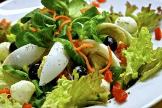

Ensalada
Home

Ensala mixta clasica
La ensalada mixta es una de las preparaciones más tradicionales y versátiles de la cocina mediterránea. Suele servirse como primer plato o acompañamiento, y se adapta fácilmente según los ingredientes disponibles.
Esta versión clásica lleva una base de lechuga combinada con tomate, cebolla, huevo duro y atún. Es ligera, refrescante y fácil de preparar, perfecta para cualquier momento del año.
Ingredientes
1 lechuga iceberg
2 tomates
1/2 cebolla
1 huevo duro
1 lata de atun
Aceite de oliva
Vinagre
Sal
Pasos
- Lavar y cortar la lechuga en trozos medianos.
- Cortar el tomate en gajos y la cebolla en rodajas finas.
- Cocer el huevo durante 10 minutos, enfriar, pelar y cortar en cuartos.
- Escurrir el atún y desmenuzarlo con un tenedor.
- En un bol grande, mezclar todos los ingredientes.
- Aliñar con sal, aceite de oliva y vinagre al gusto justo antes de servir.